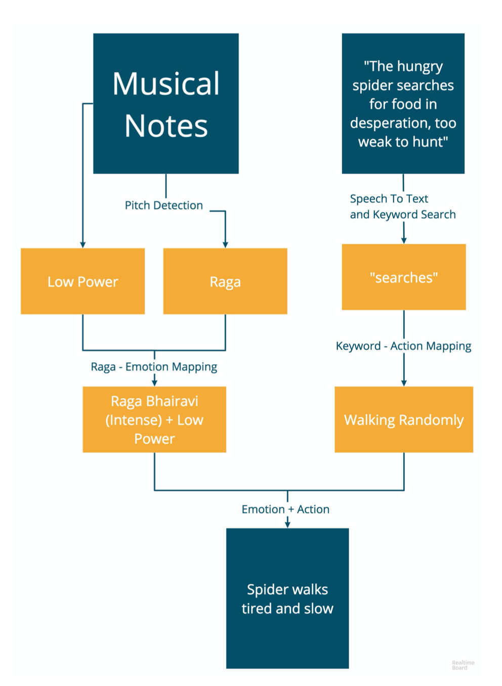

Jamoora
A robot controlled using music and speech
Abstract
Jamoora is a performer in Indian traditional folk theatre who plays the role of a sidekick. We propose the concept of implicit control of Jamoora, a robotic puppet, using music and storytelling. The puppeteer controls the actions of Jamoora using keywords woven into a story told by him while playing live music which sets the emotional tone. We take inputs from Indian musical instruments, determine the corresponding raga - an organized sequence of musical notes associated with emotions and ambiance, and then map the associated emotions to the body language of Jamoora. This integration of puppetry, music, and speech creates a rich medium of storytelling.
Role I was responsible for designing the building the actual robot. I studied and implemented animatronic principles to realize the vision of the story. I was also responsible for developing the Speech Recognition Module and the wireless communication channel between the control center and the robot.
Team Varnit Jain, Aman Parnami, Anant Sharma Timeline Jul 2018 - Oct 2018 Extended Abstract Download Link
MOTIVATION
INFORMATION FLOW
Example Scene: A spider dying of hunger, tries to find food. While searching for food, the music played would be seri- ous (Raga Bhairavi) and the script would be - "The hungry spider searches for food in desperation, too weak to hunt"
PRESENTATION
Jamoora was one of the fifteen entries selected from all over the world to be showcased as part of the Student Innovation Contest at 31st ACM User Interface Software and Technology Symposium (UIST) held in Berlin, Germany. It has been covered in many media outlets like The Indian Express, The Economic Times, The Hindu.